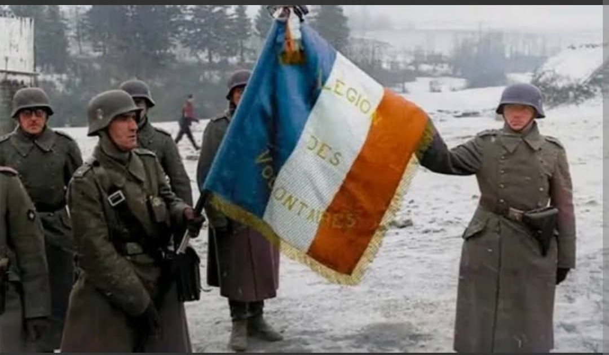
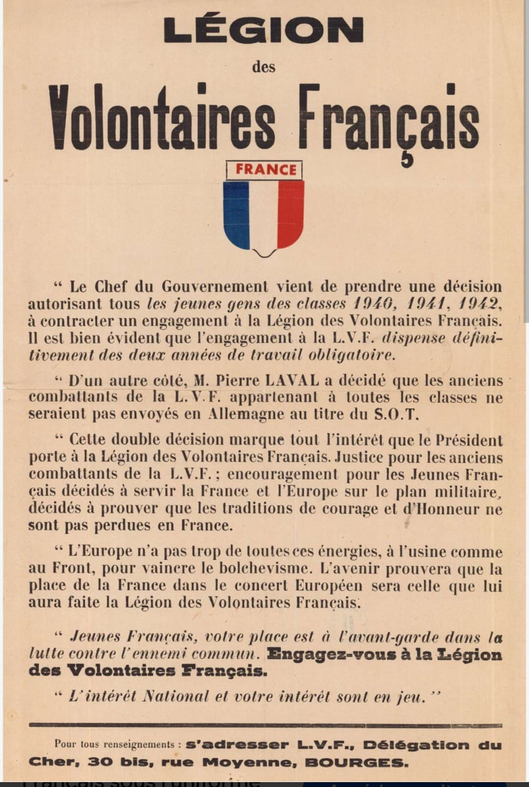
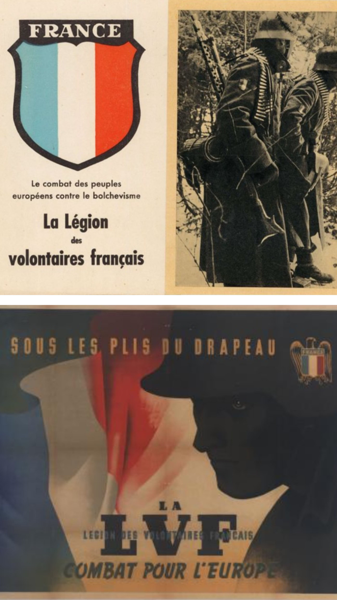
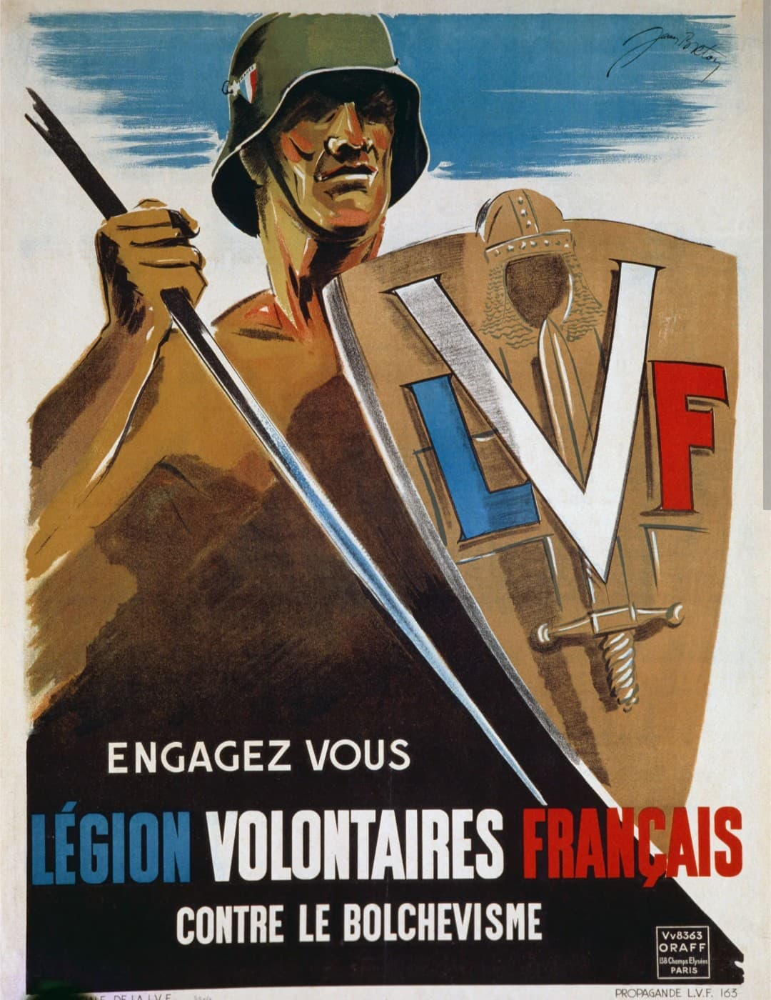
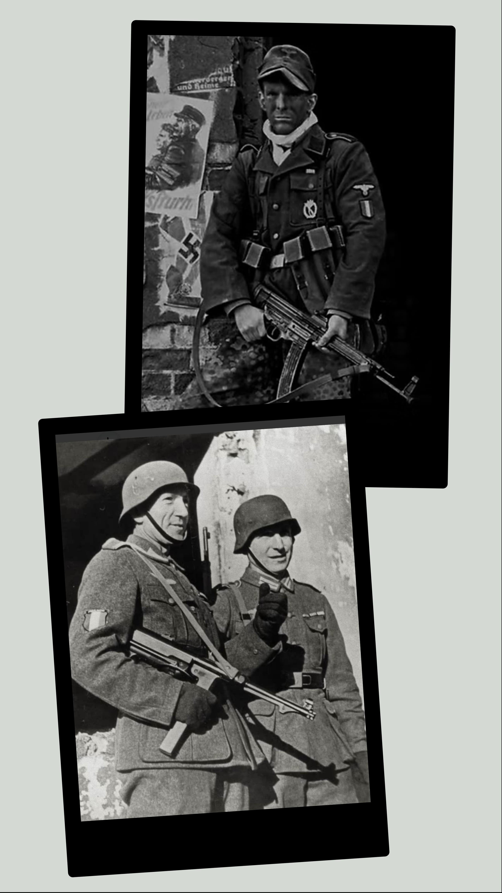

L'histoire sombre des volontaires français engagés sous l'uniforme du IIIe Reich

Contrairement aux millions de Français qui ont choisi de rejoindre la France Libre ou la Résistance intérieure pour défendre la souveraineté et l'honneur de la nation, une minorité de citoyens a fait le choix conscient de la collaboration armée aux côtés de l'Allemagne nazie.
Créée officiellement à l'automne 1944, la 33. Waffen-Grenadier-Division der SS „Charlemagne“ représente l'aboutissement de cette dérive criminelle : des Français portant l'uniforme de la SS, prêtant serment à Adolf Hitler, et combattant activement les Alliés et l'Armée Rouge jusqu'aux ruines de Berlin.
L'engagement militaire des collaborationnistes français ne s'est pas fait en un jour. Il s'inscrit dans une logique d'escalade politique et idéologique :


Sur le plan vestimentaire et héraldique, les hommes de la division Charlemagne portaient la vareuse noire ou camouflée de la Waffen-SS.
Bien qu'ils conservent un écusson de bras aux couleurs nationales (bleu, blanc, rouge) surmonté du mot « France » pour afficher leur origine géographique, cet insigne ne trompait personne : il s'agissait d'une unité de supplétifs entièrement soumise à l'appareil répressif nazi. Les pattes de collet spécifiques (remplaçant les traditionnelles runes SS par une hache ou des symboles germaniques selon les grades) marquaient leur intégration totale dans l'idéologie du Troisième Reich.
En portant ces attributs, ces hommes se sont positionnés hors de la communauté nationale, commettant un acte avéré de haute trahison envers la République française.

En avril 1945, alors que le Reich s'effondre de toutes parts, un dernier groupement tactique d'environ 300 à 400 irréductibles français, commandés par le Hauptsturmführer Henri Fenet, choisit de se porter volontaire pour participer à la défense désespérée de Berlin.

Retranchés dans le secteur gouvernemental, autour du Führerbunker et de la Chancellerie, ces combattants participent aux derniers combats de rue acharnés contre les troupes de l'Armée Rouge. Presque entièrement décimés par l'artillerie soviétique et les combats au corps à corps, les rares survivants sont capturés.
De retour en France à la Libération, les membres de l'unité qui échappent aux exécutions sommaires sont jugés par les tribunaux français pour intelligence avec l'ennemi et trahison, écopant de lourdes peines de prison ou de condamnations à mort.
L'intégration de cette fiche au sein de la section Histoire & Mémoire du Musée HOP WW2 répond à un impératif de rigueur historique et pédagogique absolue.
Il est essentiel de montrer aux visiteurs que la Seconde Guerre mondiale n'a pas seulement été un affrontement entre nations, mais aussi une guerre civile idéologique où certains citoyens ont choisi de trahir leur pays pour servir une dictature criminelle. Cette démarche permet de souligner par contrastes la valeur de l'engagement des résistants et des soldats de la France Libre.
Page du Musée HOP WW2 – La Division Charlemagne et la collaboration militaire